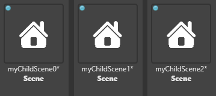
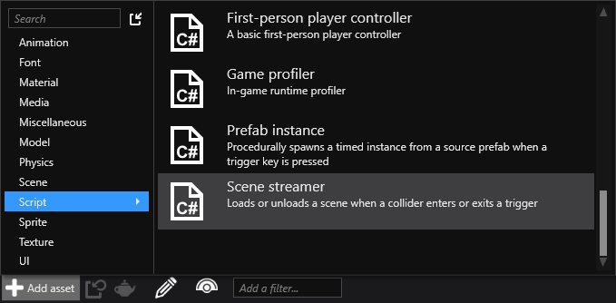
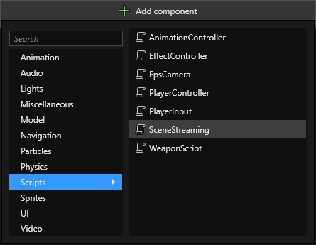
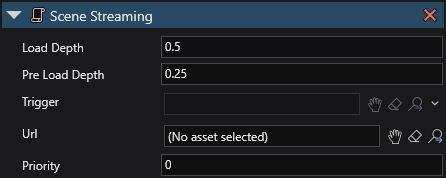

実行時にシーンをロードおよびアンロードする
次のコードでは、3 つのシーンがロードされ、子として追加されます。
var myChildScene0 = Content.Load<Scene>(url0);
var myChildScene1 = Content.Load<Scene>(url1);
var myChildScene2 = Content.Load<Scene>(url2);
myParentScene.Children.Add(myChildScene0);
myParentScene.Children.Add(myChildScene1);
myChildScene1.Add(myChildScene2);
Note
ロードするすべてのシーンがルート アセット (［Asset View］で青いアイコンで示されているもの) としてビルドに含まれることを確認してください。

シーンをビルドに追加するには、［Asset view］で、シーン アセットを右クリックして［Include in build as root asset］を選択します。
ビルドへのアセットの追加の詳細については、「アセットを管理する」を参照してください。
シーンの階層の詳細については、「シーンを管理する」を参照してください。
シーンストリーマー スクリプト
Stride には、トリガーを使用してシーンをロードする Scene Streaming スクリプトも含まれます。
Note
Scene Streaming スクリプトは例として含まれています。シーンをロードする方法として常に最適であるとは限りません。必要に応じて自由に変更してください。
シーンストリーマー スクリプトを追加する
Scene Streaming スクリプトを追加するには、［Asset view］(既定では下部のペイン) で、［Add asset］をクリックし、［Scripts］>［Scene streamer］を選択します。

プロジェクトのアセットに Scene Streaming スクリプトが追加されます。
シーンストリーマー スクリプトを使用する
トリガー エンティティを作成します。これが実行時にトリガーされると、シーンがロードされます。トリガーの作成の詳細については、「トリガー」を参照してください。
エンティティがトリガーされる方法はコライダーのプロパティで定義されています。詳細については、「コライダー」を参照してください。
エンティティを作成して、シーンをロードする場所に配置します。
エンティティを選択し、［Property grid］(既定では右側) で［Add component］をクリックして、［SceneStreaming］スクリプトを選択します。

Note
コンポーネントの一覧にシーン ストリーマー スクリプトが表示されない場合は、アセンブリを再ロードしてください。
コンポーネントとしてエンティティにスクリプトが追加されます。

［Url］で、ロードするシーンの URL を指定します。
［Trigger］で、ステップ 1 で作成したエンティティを指定します。
実行時に、ステップ 1 で作成したトリガーがトリガーされると、ステップ 4 で指定したシーンがロードされます。
シーンストリーマー スクリプトのプロパティ
| プロパティ | 説明 |
|---|---|
| Pre Load Depth | シーンのロードを開始するポイント (ワールド単位)。たとえば、2.5 と指定すると、プレイヤーがトリガー領域に 2.5 単位入った時点で、シーンのロードが開始します。 |
| Load Depth | シーンがまだロードされていない場合、シーンのロードを終了するためにゲームがフリーズするポイント (ワールド単位)。たとえば、5 と指定すると、プレイヤーがトリガー領域に 5 単位入った時点で、ゲームがフリーズします。 |
| Priority | スクリプトの優先順位。詳細については、「スケジュールと優先順位」を参照してください。 |